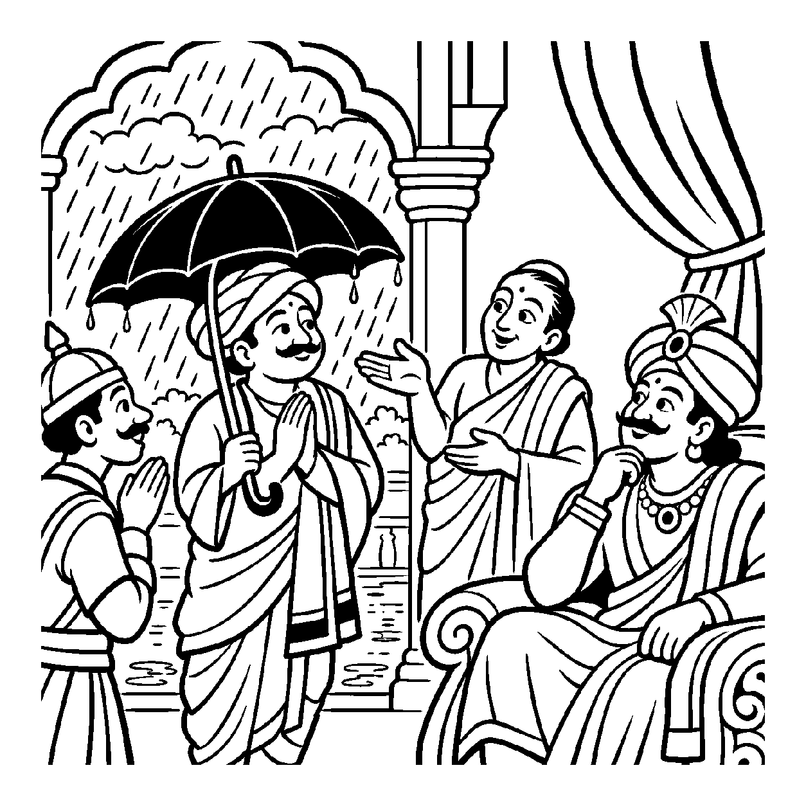

ગામના પાદરેથી એક વૃદ્ધ વડીલ પોતાના હાથમાં વાંસની એક મજબૂત લાકડી ટેકવતા ટેકવતા ધીમે ધીમે ચાલી રહ્યા છે. દૂર ખેતરમાં ઊભેલો એક ખેડૂત તેમને ઝડપથી ઓળખીને સાદ પાડે છે: "એ લાકડી! જરા અહીં આવજો, મારે તમારું કામ છે!" વાસ્તવમાં લાકડી એ વાંસનું એક જડ પુદ્ગલ સાધન છે, જ્યારે તેને હાથમાં પકડનાર એક જીવંત, અનુભવી ચેતન પુરુષ છે. પુરુષ કોઈ લાકડી નથી; છતાં જેની પાસે લાકડી છે (તદ્વતી), તેને તે લાકડીના નામે જ સંબોધી લેવો તે ન્યાયશાસ્ત્ર અને વ્યાકરણનો અતિપ્રસિદ્ધ 'તદ્વતી તદુપચારઃ' સિદ્ધાંત છે. તેવી જ રીતે જ્યારે કોઈ પદાર્થ કે ગુણ જેની પાસે હોય, તે ધારકને તે પદાર્થનું જ નામ આપીને — "આ લાકડીવાળો માણસ લાકડી છે, આ છત્રીવાળો છત્રી છે, આ જ્ઞાનવાળો સાક્ષાત્ જ્ઞાન છે" — એમ વ્યવહાર કરવામાં આવે, ત્યારે તેને 'તદ્વતી તદુપચારક વ્યવહાર' કહેવાય છે.
ન્યાયશાસ્ત્રમાં 'તદ્વતી તદુપચારઃ' એ ઉપચારનો મૂળભૂત પાયો છે. સંસારમાં પ્રત્યેક વ્યક્તિ કોઈ ને કોઈ બાહ્ય ઉપકરણ, વસ્ત્ર કે ચિહ્ન ધારણ કરે છે. જ્યારે તે ચિહ્ન અત્યંત પ્રગટ હોય, ત્યારે લોકો ધારક અને ચિહ્ન વચ્ચે અભેદ માનીને વ્યવહાર ચલાવે છે. હાથમાં ધનુષવાળાને 'ધનુર' કહેવાય છે; માથે પાઘડીવાળાને 'પાઘડી' કહેવાય છે. અહીં પુદ્ગલ ઉપકરણના નામે ચેતન આત્માનું સંબોધન થવા છતાં કોઈ ભ્રાંતિ થતી નથી કારણ કે લોકમાનસમાં આ ઉપચાર સર્વથા સ્વીકૃત છે.
આ નય સાધકને સમજાવે છે કે બાહ્ય ઉપકરણો કે વસ્ત્રો કેવળ શરીરના સહાયક છે; આત્મા તો આ તમામ બાહ્ય ચિહ્નો વિના પણ સદા પૂર્ણ અને અસંગ છે.
હાથ લાકડી ટેકવી, વૃદ્ધ ચાલે પંથ;
'એ લાકડી' કહી બોલાવે, ન્યાયશાસ્ત્રનો ગ્રંથ.
તદ્વતી તદુપચારથી, ભાખે લોક વ્યવહાર;
ચિહ્ન તજી ભીતર જુએ, પામે આત્મ ઉદ્ધાર.
સાધકને સમજાવે છે કે બાહ્ય ઉપકરણો કે વસ્ત્રો કેવળ શરીરના સહાયક છે; આત્મા તો આ તમામ બાહ્ય ચિહ્નો વિના પણ સદા પૂર્ણ અને અસંગ છે.

એક નગરમાં ચોમાસાની ઋતુમાં ધોધમાર વરસાદ વરસી રહ્યો હતો. રાજમાર્ગ પર પાણી ભરાઈ ગયું હતું. મહેલના ઝરૂખામાંથી રાજા નીચે જોઈ રહ્યા હતા. રસ્તા પરથી કાળા રંગની એક મોટી છત્રી ઓઢીને એક માણસ ઝડપથી પસાર થઈ રહ્યો હતો. રાજાએ પહેરેદારને કહ્યું: "જો, પેલી કાળી છત્રી અહીં મહેલ તરફ આવી રહી છે, તેને અંદર બોલાવ!" પહેરેદારે દરવાજે જઈને જોયું તો ત્યાં એક પ્રતિષ્ઠિત નગરશેઠ ઊભા હતા. પહેરેદાર મૂંઝાઈ ગયો: "રાજાજીએ તો છત્રીને બોલાવી હતી, પણ અહીં તો શેઠજી આવ્યા છે! શું શેઠજી છત્રી બની ગયા છે કે છત્રી શેઠજી બની ગઈ છે?" તે આધાર અને ઉપકરણ વચ્ચે ગૂંચવાઈ ગયો.
તે જ સમયે રાજાના સભાપંડિત ત્યાંથી નીકળ્યા. તેમણે પહેરેદારની મૂંઝવણ જોઈને હસીને કહ્યું: "ભાઈ! તદ્વતી તદુપચારક વ્યવહારને ઓળખ! શેઠજીના હાથમાં કાળી છત્રી હતી, તેથી રાજાજીએ છત્રીવાળા પુરુષને સંબોધવા માટે છત્રીના નામે જ બોલાવી લીધા! એ ન્યાયશાસ્ત્રનો 'તદ્વતી તદુપચારઃ' નિયમ છે. જેની પાસે વસ્તુ હોય તેને તે વસ્તુના નામે બોલાવવો એ ભાષાની એક સુંદર રીત છે. શેઠજી કોઈ છત્રી નથી બન્યા, અને છત્રી શેઠજી નથી બની!" પહેરેદારને રહસ્ય સમજાયું. તેણે શેઠજીને આદરપૂર્વક મહેલમાં પ્રવેશ આપ્યો. રાજાએ પણ હસીને શેઠજીનું સ્વાગત કર્યું. બાહ્ય ઉપકરણો કેવળ ઓળખના સાધન છે અને સાચી મહત્તા ભીતરની ચેતનાની છે તે જાણીને શેઠજીનું ચિત્ત પરમ વિશ્રામમાં શાંત થઈ ગયું.
જો જીવ બાહ્ય ચિહ્ન કે સાધનને જ વ્યક્તિનું અંતિમ અસ્તિત્વ માની લે, તો તે સાધન ગુમાવતાં જ વ્યક્તિનું મૂલ્ય શૂન્ય ગણી બેસે છે. એક જ પાસાને પકડી રાખવાથી વસ્તુની સમગ્ર અનેકાંતમય સત્તા વિખંડિત થાય છે અને સાધક પોતાના જ એકાંગી આગ્રહના બંધનમાં ફસાઈને સાચી શાંતિ ગુમાવી બેસે છે.
આ નય વ્યવહારિક ઓળખની સરળતા સાચવીને પણ ધારકની ચેતન મહત્તા પ્રગટાવે છે, જેથી સાધક હું-પણાને ભૂલી પોતાના આત્મસ્વરૂપમાં સ્થિર થાય છે.